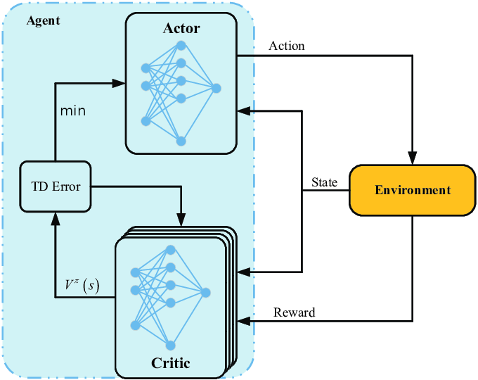
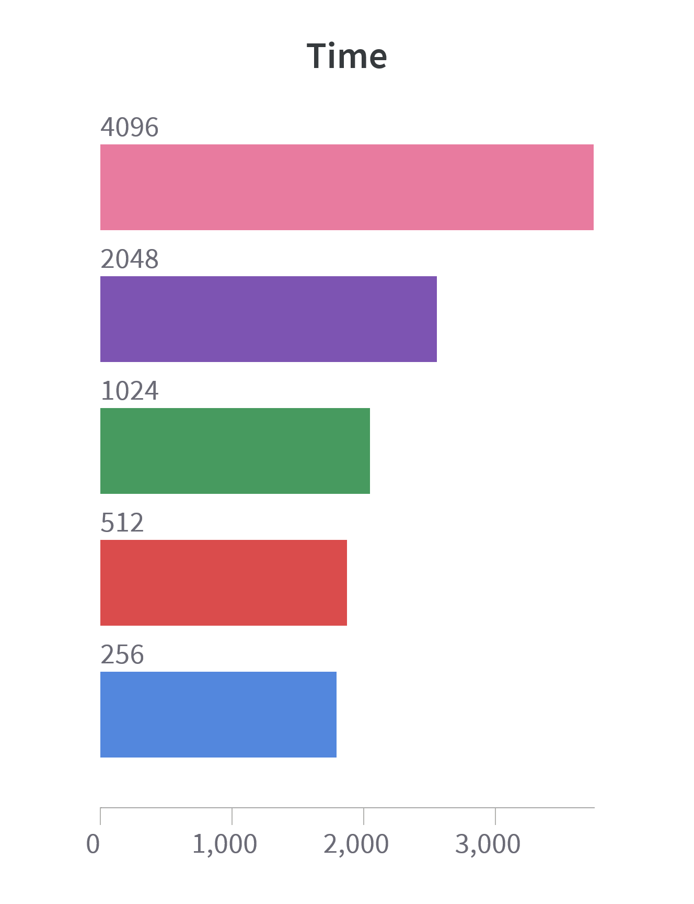

means = [0,2,-1,0,1,1,2,0,-1,-2,0,1,2,4,3,3,1,0,-1,0];
stds = [2,3, 2,1,2,3,2,3, 4, 2,3,4,2,1,3,2,1,2, 3,2];
viewof num_critics = Inputs.range([1,50], {value:20, step:1, label: "#critics: "});
function gaussianRandom(mean=0, stdev=1) {
let u = 1 - Math.random(); // Converting [0,1) to (0,1]
let v = Math.random();
let z = Math.sqrt(-2.0*Math.log(u)) * Math.cos(2.0*Math.PI*v);
return z * stdev + mean;
}
function example_critic() {
return [...Array(means.length).keys()].map((i)=>gaussianRandom(means[i], stds[i]));
}
function toPlot(data, color){
return Plot.line(data.map((x, i)=>({"action space": i, "q-value": x})), {x: "action space", y: "q-value", stroke: color});
}
critics = [...Array(num_critics).keys()].map(i=>example_critic());
Plot.plot({
marks: [
Plot.areaY(means.map((x,i)=>({"action space": i, low:x-stds[i], high:x+stds[i]})), {x: "action space", y1: "low", y2: "high", fill: "#ddd"}),
...(critics.map(x=>toPlot(x, "lightblue"))),
toPlot([...Array(means.length).keys()].map(i=>Math.min(...critics.map(x=>x[i]))), "blue"),
toPlot(means, "black"),
],
y: {
domain: [-10,10],
label: "q-value",
},
x: {
tickFormat: x => "",
},
width: 796,
});Uncertainty-Based Offline Reinforcement Learning with Diversified Q-Ensemble
based on (An et al. 2021)
Abstract
TODO: abstract
Introduction
Why Offline-RL?
Training of RL algorithms require active interaction with the environment. Training can become quite time-consuming and expensive. It can even be dangerous in safety-critical domains like driving or healthcare. A trial-and-error procedure is basically prohibited. We cannot as an example let an agent explore, make mistakes, and learn while treating patients in a hospital. That’s what makes learning from pre-collected experience so relevant. And fortunately we have already in many domains existing large datasets. Offline-RL therefore aims to learn policies using only these pre-collected data without further interactions with the environment.

What properties make offline-RL difficult?
But offline RL comes with its own challenges. By far the biggest problem are so called out of distribution (OOD) actions. OOD actions refer to actions taken by an agent that fall outside the range of actions observed in the training dataset. State-action space can become so vast that the dataset cannot cover all of it. Especially narrow and biased datasets lack significant coverage and can lead to problems with OOD actions. For example, healthcare datasets are often biased towards serious cases. Only seriously ill people are getting treated, while healthier people are sent home untreated.

A naive algorithm might now conclude that treatment causes death, since there were no fatalities in the untreated (= healthy) patients. Choosing to not treat a severely sick patient is something that never happened in the data, since the doctor would thereby violate his duty of care. Not treating a sick patient is therefore an OOD action. Vanilla RL algorithm might heavily overestimate the Q-values of OOD state-action pairs.
How to deal with OOD state-actions?
“Avoid OOD state-actions!”, has been the approach of many offline RL algorithms. This can be achieved by regularizing the policy to be close to the behavior policy that was used to collect the data. A more recent approach is to penalize the Q-values to be more pessimistic as done in Conservative Q-learning for Offline RL (CQL). But if we use this approach we require either (a) an estimation of the behavior policy or (b) explicit sampling from OOD data points (difficult!). Further, we prohibit our agent to approach any OOD state-actions, while some of these might actually be good. Q-function networks do have the ability to generalize. It’s all about handling the uncertainty of these predictions. The agent might benefit from choosing some OOD data points which Q-values we can predict with high confidence. With SAC-N and EDAC An et al. (2021) found a way of effectively quantifying the Q-value estimates by an ensemble of Q-function networks. In this blog we will explore and explain them.
The Basics
Q-Learning
Like in standard reinforcement learning we want to find a policy \(\pi(a | s)\) that maximizes the cumulative discounted reward \(\mathbb{E}_{s_t, a_t}[...]\). The model-free Q-learning algorithm is a very common approach to learn the Q-function \(Q_{\phi}(s,a)\) with-in a neural network.
Actor-critic method
In the standard deep actor-critic approach we use two networks: (1) a policy-based actor network and (2) a value-based critic network.

The critic network minimizes the Bellman residual. Note: In offline RL transitions are sampled from a static dataset \(D\)
\[J_q(Q_\phi) := \mathbb{E}_{(s,a,s') \sim D} \left[ \left( Q_\phi(s,a) - \left ( r(s,a) + \gamma\ \mathbb{E}_{a'\sim\pi_\phi(\cdot|s')}[Q_{\phi'}(s',a')] \right)\right)^2 \right]\]
The actor network is updated in an alternating fashion to maximizes the expected Q-value.
\[J_p(\pi_\phi) := \mathbb{E}_{s\sim D, a\sim\pi_\phi(\cdot|s)} \left[ Q_\phi(s,a) \right]\]
Conservative Q-Learning
As of 2021, Conservative Q-Learning (Kumar et al. 2020) is the state-of-the-art for offline RL. It uses a “simple Q-value regularizer” to prevent the overestimation of OOD actions.
\[\min_\phi J_q(Q_\phi)+\alpha(\mathbb{E}_{s\sim D, a\sim\mu(\cdot|s)}[Q_\phi(s,a)] - \mathbb{E}_{(s,a)\sim D}[Q_\phi(s,a)])\]
For each state, CQL computes a distribution over actions using a temperature parameter \(\alpha\) that controls the amount of exploration. The distribution is a mixture of the behavior policy and the current Q-function. The closer \(\alpha\) is to 1 the more conservative.
CQL will be used as the baseline.
Dataset
Soft Actor-Critic (SAC-N)

The paper introduces two new methods for offline RL. The first method is called SAC-N and is an extension of Soft Actor-Critic (SAC) (Haarnoja et al. 2018), which is a popular off-policy actor-critic deep RL algorithm. SAC-N extends SAC by using the q-value of N instead of two q-functions, i.e. critics, as visualized in #fig-actor-critic-sacn. The q-values are then reduces to a single value by taking the minimum. The idea behind taking the minimum of more critics is that the resulting q-value is more pessimistic when the uncertainty is high. This prevents erroneously high q-values of OOD actions and therefore trains the actor to prefer safer actions.
The minimum of multiple critics approximates the true q-value minus a multiple of the standard deviation (An et al. 2021):
\[ \mathbb{E}\left [\min_{i=1,...,N}Q_i\right] \approx m - \Phi^{-1}\left(\frac{N-\pi/8}{N-\pi/4+1}\right) \sigma \]
Where \(N\) is the number of critics, \(Q_i\) is the q-value of the \(i\)-th critic, \(m\) is the theoretical true q-value, \(\Phi\) is the CDF of the standard gaussian distribution, and \(\sigma\) is the standard deviation.
This is visualized in the diagram below, where q-value estimates over an exemplary action space are plotted.The black line is the theoretical true q-value and the grey area its standard deviation. The lightblue lines represent the critics, that try to approximate the true q-value. The bottom blue line is the minimum of the critics, that should, especially for a high number of critics, be roughly the true q-value minus a multiple of the standard deviation. You can use the slider to change the number of critics:
SAC-N already achieves notable performance and beats the previous state of the art, CQL, as will be shown in the results section. However, SAC-N requires a large number of critics, which comes with a high computational cost. Therefore, the paper introduces a second method, EDAC, that is more efficient.
Ensemble-Diversified Actor Critic (EDAC)
An et al. (2021) found, that the performance of the policy learned by SAC-N decreases significantly, when the q-functions share a similar local structure. To reduce this, they introduce an ensemble gradient diversification term to the loss function of the ensemble of critics:
\[ \underset\phi{\text{minimize}}\ \ \frac{1}{N-1} \sum_{1\leq i\neq j \leq N} \langle \nabla_a Q_{\phi_i}, \nabla_a Q_{\phi_j} \rangle \]
It measures the cosine similarity between the q-function gradients and is minimized when the gradients for the critics are as different as possible. This, in turn, leads to a more diverse ensemble of critics, which is more robust against overestimation of OOD actions.

The full loss function of the critics is then:
\[\nabla_{\phi_i} \frac{1}{|B|} \sum_{(s,a,r,s')\in B} \left (\left( Q_{\phi_i}(s,a) - y(r, s') \right) + \frac{\eta}{N-1} \sum_{1\leq i\neq j \leq N} \langle \nabla_a Q_{\phi_i}, \nabla_a Q_{\phi_j} \rangle \right)\]
where \(B\) is the batch of transitions, \(y(r, s')\) is the target q-function6, and \(\eta\) is the hyperparameter for how much the ensemble gradient diversification term should be weighted.
Note that EDAC reduces to SAC-N when \(\eta=0\).
Implementation
There are multiple implementations of EDAC and SAC-N available. An et al. (2021) published their implementation on GitHub. It contains 9712 lines of python code over 93 files.
Another implementation is part of the Clean Offline Reinforcement Learning (CORL) Repository, which aims to provide single-file implementations of SOTA offline RL algorithms. Its EDAC implementation contains 639 lines of code in a single file. This makes it significantly easier to understand and modify. We therefore used it for some of our experiments and as a inspiration for our own implementation.7
We also implemented EDAC from scratch and managed to achieve a code size of 379 lines, while adding additional features8. Our results below are based on our implementation until stated otherwise.
Code
A simplified version of the main parts of our train function looks like this:
def train(config, ...):
# initialize environment, and set seeds
...
# initialize models
actor = Actor([state_dim, 256, 256, action_dim], ...)
critic = VectorCritic([state_dim + action_dim, 256, 256, 1], ...)
target_critic = deepcopy(critic)
log_beta = torch.tensor(0.0, requires_grad=True)
beta = log_beta.exp()
# initialize optimizers (Adam)
...
# set critic ensemble reduction function, by default `min`
...
# load checkpoint if given, save the config, and initialize logging
...
# main training loop
for epoch in range(config.epochs):
for step in range(config.updates_per_epoch):
# sample batch of transitions
state, action, reward, next_state, done = buffer.sample()
# calculate q-target
next_action, log_prob = actor(next_state)
q_next = (
critic_reduction(target_critic(next_state, next_action))
- beta * log_prob
)
q_target = reward + config.gamma * (1 - done) * q_next
# update critics
base_critic_loss = (critic(state, action) - q_target).pow(2)
q_gradients = torch.autograd.grad(critic(...), ..., create_graph=True)
diversity_loss = (q_gradients @ q_gradients.T) * (1-torch.eye(N)) / (N-1)
critic_loss = base_critic_loss.sum(-1) + config.eta * diversity_loss.sum(1,2)
...
# update beta
beta_loss = (-log_beta * (actor_action_log_prob - action_dim))
...
beta = log_beta.exp()
# update actor
actor_q_values = critic(state, actor_action)
actor_loss = -(critic_reduction(actor_q_values) - beta * actor_action_log_prob)
...
# update target critic
for target_param, source_param in zip(
target_critic.parameters(), critic.parameters()):
target_param.data.copy_(
(1 - config.tau) * target_param.data
+ config.tau * source_param.data
)
# save checkpoint, and log metrics
...Which uses separate classes for the Actor and VectorCritic9:
class Actor(nn.Module):
def __init__(self, layer_sizes : list[int], ...):
...
# setup hidden layers based on the given layer sizes
self.hidden = nn.Sequential(*(
x for i in range(len(layer_sizes) - 2) for x in [
nn.Linear(layer_sizes[i], layer_sizes[i + 1]),
nn.ReLU()
]
))
# create output and output uncertainty layers
self.output = nn.Linear(layer_sizes[-2], layer_sizes[-1])
self.output_uncertainty = nn.Linear(layer_sizes[-2], layer_sizes[-1])
# init parameters as in the EDAC paper
...
def forward(self, state):
x_hidden = self.hidden(state)
x_mean = self.output(x_hidden)
x_std = torch.exp(torch.clip(self.output_uncertainty(x_hidden), -5, 2))
policy_dist = Normal(x_mean, x_std)
action_linear = policy_dist.rsample()
action = torch.tanh(action_linear) * self.max_action
action_log_prob = policy_dist.log_prob(action_linear).sum(-1)
return action, action_log_probVectorCritic(nn.Module):
def __init__(self, layer_sizes: list[int], num_critics: int):
...
# create multiple critics with the architecture given by layer_sizes
# the output layer has no activation function
self.models = nn.ModuleList([
nn.Sequential(*[
x for i in range(len(layer_sizes) - 1) for x in [
nn.Linear(layer_sizes[i], layer_sizes[i + 1]),
nn.ReLU()
]
][:-1]) for _ in range(num_critics)
])
# init parameters as in the EDAC paper
...
def forward(self, state, action):
return torch.cat([
model(torch.cat([state, action], dim=-1)) for model in self.models
], dim=-1)Modifications
We made a few modifications to the EDAC algorithm described in the paper.
Dynamic \(\beta\)
As can be seen in the train function above, \(\beta\) (beta) is learned dynamically during training. While this is not explicitly mentioned in the pseudocode in the paper, the official implementation uses it, if use_automatic_entropy_tuning is set to True. As it can significantly improve training speed and the performance of the actor (at least for a limited training time), we decided to use it as well.
However, we found that sometimes \(\beta\) would decrease continuously, which also limits the performance of the actor. How to prevent this could be a topic for future research.
Alternative Critic Ensemble Reduction
SAC-N, and therefore also EDAC, use the minimum q-value estimate of their critic ensembles. However, it seems like this could be too pessimistic in some cases, as q-value estimates cannot only be erroneously high, but also erroneously low. We tried to get better q-value estimations by subtracting a multiple of the standard deviation \(\sigma\) from the mean \(\mu\), i.e. \(Q_{\text{final}} = \mu - \alpha * \sigma\), where \(\alpha\) is a hyperparameter. The idea is to be more pessimistic, the higher the standard deviation is. Actually, as already mentioned in the section about SAC-N, this should be the expected value of the minimum q-value estimate for some specific \(\alpha\) and therefore be similar. However, as can be seen below in Figure 10, it performs significantly worse than the minimum.
Alternative critic ensemble reduction functions could be based on the median or use a weighted average of the q-values, where the weights decay exponentially for higher q-values. This, too, could be a topic for future research.
Results


The learning curve is similar for all batch sizes. With n=2048 we have optimal performance. Note: In the paper they had batch size n=256 although they used the same graphics card.
Interpretation: Our implementation performs best on the full-replay dataset. From mistakes made during training the model can learn. The full replay has the best mix between these errors and good actions. This way there are less OOD actions. Problem: The model should be able to learn from biased data, especially from expert data. It is possible though, that training with the expert dataset just needs much more time to kickstart.
Interpretation: EDAC with only 10 critics can outperform SAC-20. Increasing \(N\) did not always improve the results for EDAC. The training duration is heavily dependant on the amount of critics.

Interpretation: Using a custom critic reduction instead of the minimum, did not work with EDAC. The standard deviation of the ensemble might fluctuate too much to be “contained” by a static parameter. Other approaches could be to try out this method with SAC-N. Another idea is to take the median instead of the mean.
Videos
References
An, Gaon, Seungyong Moon, Jang-Hyun Kim, and Hyun Oh Song. 2021. “Uncertainty-Based Offline Reinforcement Learning with Diversified q-Ensemble.” In Neural Information Processing Systems.
Fu, Justin. 2020. “D4RL: Building Better Benchmarks for Offline Reinforcement Learning.” Berkeley Artificial Intelligence Research. https://bair.berkeley.edu/blog/2020/06/25/D4RL/.
Giang, Hoang Thi Huong, Tran Nhut Khai Hoan, Pham Duy Thanh, and Insoo Koo. 2020. “Hybrid NOMA/OMA-Based Dynamic Power Allocation Scheme Using Deep Reinforcement Learning in 5G Networks.” Applied Sciences 10 (12). https://doi.org/10.3390/app10124236.
Haarnoja, Tuomas, Aurick Zhou, P. Abbeel, and Sergey Levine. 2018. “Soft Actor-Critic: Off-Policy Maximum Entropy Deep Reinforcement Learning with a Stochastic Actor.” In International Conference on Machine Learning.
Kumar, Aviral, Aurick Zhou, G. Tucker, and Sergey Levine. 2020. “Conservative q-Learning for Offline Reinforcement Learning.” ArXiv abs/2006.04779.
Footnotes
Figure taken from TODO↩︎
TODO: maybe describe what the target q-function is↩︎
Our fork of CORL for our experiments is also available on GitHub↩︎
We added features like the continuation of training runs, and new critic ensemble reduction functions (instead of min) to our implementation.↩︎
The
VectorCriticis a wrapper around a list of critics, which simplifies the handling of multiple critics.↩︎